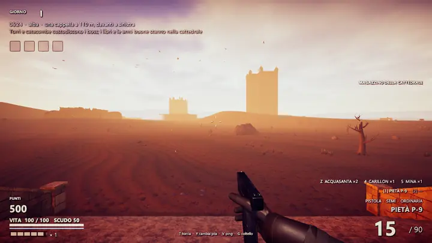

The desert

The desert is the second way to play: an open world of sand built from one seed. You leave the cathedral by its stair and walk, or ride a motorbike, across regions with their own ground, buildings and enemies. Its towers and catacombs are stacks built on the sand. Its time is a day of twenty minutes with a night, and its weather is the sandstorm.
Regions and places
The seed lays out six regions: the badlands of red ground and mesas, the dead town of ash-grey hotels, theatres and sanatoria falling apart, the dunes, the hamlets of small houses, inns, wells and windmills, the holy land of chapels, churches and obelisks, and the salt flats. Places stand in them: houses, inns, chapels, churches, hotels, theatres, sanatoria and complexes.
Landmarks, camps and finds
Landmarks show from afar and help you find your way: the welcome chapel, the obelisk, the well, the windmill and the butte. The campfires burn only at night. The sand gives gold coins (see points), a medikit, essence and an ammunition crate.
Enemies and animals
The desert draws its walkers from eight kinds, among them the monk, the flagellante, the appestato and the statua, and in its sanatoria, and in the towers given the sanatorium theme, the infermiere; in its theatres, the maschera. Each tower and catacomb ends in a hall with one of four bosses, the lord of the place. By day the lizards, scarabs and scorpions live on the sand and run away; vultures circle the ruins.
Day, night and weather
A day lasts twenty minutes: about twelve of daylight and eight of night. The enemies rest by day and wake when you come within 30 m, or within 48 m at night (see day and night). About one day in two a sandstorm blows between 08:00 and 22:00 and thickens the fog.
Getting around
The minimap shows a 512 m chart drawn north up, and from 90 m away the arrow points you home. Each player has a motorbike at the foot of the cathedral stair: you get on and off with F, the speedometer is in km/h, you can shoot from the saddle, and the wheels leave tracks in the sand.
The cathedral in the desert
The cathedral keeps its store, its works and its market. Its Library of Vows sells perk books, and the Altar of Consecration consecrates the weapon in your hand. The armoury sells weapons at twice the standard price. The sand gives only grade I weapons for free, and grade II in a boss hall.
Co-op and split screen
Up to four players share one desert. Each machine builds the same world from the host's seed, and each seat of a split screen starts its own expedition. Nothing of the desert is saved; see characters and saves.
Standard and desert
- Desert. This mode: no waves, no candles, no stealth, no catacomb expedition to bring home, and a clock and weather of its own.
- Standard. Without the desert, the standard game has the waves, the trials, the satchel, the oboli, the blessings, the annexes and the power panel. The standard mode has them; the desert has the open sand instead. The full list is in standard vs desert.